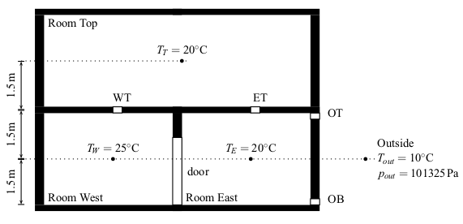

This package contains examples for the use of models that can be found in Buildings.Airflow.Multizone.
Extends from Modelica.Icons.ExamplesPackage (Icon for packages containing runnable examples).| Name | Description |
|---|---|
| Model that demonstrates the chimney effect with a steady-state model of a shaft | |
| Model that demonstrates the chimney effect with a dynamic model of a shaft | |
| Model that transport CO2 through buoyancy driven flow | |
| Model with one open and one closed door | |
| Model with three closed doors | |
| Model with an effective air leakage area | |
| Model with an orifice | |
| Model with four rooms and buoyancy-driven air circulation that reverses direction | |
| Model with three rooms and buoyancy-driven air circulation that reverses direction | |
| Model with one room for the validation of the multizone air exchange models | |
| Model with three rooms for the validation of the multizone air exchange models | |
 Buildings.Airflow.Multizone.Examples.ChimneyShaftNoVolume
Buildings.Airflow.Multizone.Examples.ChimneyShaftNoVolumeThis model demonstrate buoyancy-induced air flow through a vertical shaft. On the right, there are two flow paths that are connected to a volume, which is kept at 20°C through a feedback controller, and to the ambient, which is at 0°C. The flow path on the very right consists of an orifice and two models that compute the pressure difference Δp between the bottom and top of the medium column using Δp=h ρ g, where h is the height of the medium column, ρ is the density of the medium column and g is the gravity constant.
The top model is parameterized to use the
density from the ambient,
whereas the bottom model is parameterized to use
the density from the room volume, regardless of
the flow direction.
In the other flow path, the model sha
is parameterized to use the density of the inflowing
medium.
Thus, these models can be thought of as a chimney to the left,
and a roof with a leakage on the right. The chimney height starts
1.5 m below the roof, and ends 1.5 m above the roof.
The flow boundary condition of the model
boundary is such that at the start
of the simulation, air flows from boundary
to roo until t=600 seconds. Then, the flow rate
is set to zero until t=1800 seconds.
Since the shaft sha is filled with
20°C air, there is a circulation in the clock-wise
direction; up the shaft, and down the other flow path.
Next, until t=2400 seconds, air is extracted from
the volume roo, and then the flow rate
of bondary is set to zero. Since the
shaft sha is now filed with air at 0°C,
there is a counter clock-wise flow; down the shaft, and
up the other flow path.
model ChimneyShaftNoVolume "Model that demonstrates the chimney effect with a steady-state model of a shaft" extends Modelica.Icons.Example; package Medium = Buildings.Media.IdealGases.SimpleAir;Fluid.MixingVolumes.MixingVolume roo( V=2.5*5*5, energyDynamics=Modelica.Fluid.Types.Dynamics.FixedInitial, massDynamics=Modelica.Fluid.Types.Dynamics.FixedInitial, T_start=273.15 + 20, redeclare package Medium = Medium, m_flow_nominal=0.05, p_start=101325, nPorts=3) "Air volume of a room"; Buildings.Airflow.Multizone.Orifice oriChiTop( m=0.5, redeclare package Medium = Medium, A=0.01); Buildings.Fluid.Sources.MassFlowSource_T boundary( redeclare package Medium = Medium, use_m_flow_in=true, T=293.15, nPorts=1); Buildings.Fluid.Sources.Boundary_pT bou0( redeclare package Medium = Medium, T=273.15, nPorts=2); Buildings.Airflow.Multizone.Orifice oriBot( m=0.5, redeclare package Medium = Medium, A=0.01); Modelica.Blocks.Sources.CombiTimeTable mRoo_flow(tableOnFile=false, table=[0, 0.05; 600,0.05; 601,0; 1800,0; 1801,-0.05; 2400,-0.05; 2401,0; 3600,0]) "Mass flow into and out of room to fill the medium column with air of different temperature"; MediumColumn staOut( redeclare package Medium = Medium, densitySelection=Buildings.Airflow.Multizone.Types.densitySelection.fromTop, h=1.5) "Model for stack effect outside the room"; Buildings.Airflow.Multizone.Orifice oriChiBot( m=0.5, redeclare package Medium = Medium, A=0.01); Buildings.HeatTransfer.Sources.PrescribedHeatFlow preHea "Prescribed heat flow"; Buildings.Controls.Continuous.LimPID con( Td=10, yMax=1, yMin=-1, Ti=60, controllerType=Modelica.Blocks.Types.SimpleController.P, k=5) "Controller to maintain volume temperature"; Modelica.Blocks.Sources.Constant TSet(k=293.15) "Temperature set point"; Modelica.Thermal.HeatTransfer.Sensors.TemperatureSensor temSen "Temperature sensor"; Modelica.Blocks.Math.Gain gain(k=3000); inner Modelica.Fluid.System system; Buildings.Airflow.Multizone.MediumColumn sha(redeclare package Medium = Medium, densitySelection=Buildings.Airflow.Multizone.Types.densitySelection.actual) "Shaft of chimney"; MediumColumn staIn( redeclare package Medium = Medium, densitySelection=Buildings.Airflow.Multizone.Types.densitySelection.fromBottom, h=1.5) "Model for stack effect inside the room"; equationconnect(TSet.y, con.u_s); connect(temSen.T, con.u_m); connect(gain.u, con.y); connect(gain.y, preHea.Q_flow); connect(sha.port_a, oriChiTop.port_a); connect(sha.port_b, oriChiBot.port_b); connect(staOut.port_b, oriBot.port_a); connect(preHea.port, roo.heatPort); connect(roo.heatPort, temSen.port); connect(bou0.ports[1], oriChiTop.port_b); connect(bou0.ports[2], staOut.port_a); connect(oriBot.port_b, staIn.port_a); connect(mRoo_flow.y[1], boundary.m_flow_in); connect(boundary.ports[1], roo.ports[1]); connect(roo.ports[2], staIn.port_b); connect(roo.ports[3], oriChiBot.port_a); end ChimneyShaftNoVolume;
Buildings.Airflow.Multizone.Examples.ChimneyShaftWithVolume
This model is identical to
Buildings.Airflow.Multizone.Examples.ChimneyShaftNoVolume,
except that the chimney model is not steady-state, but rather dynamic
as it contains an air volume. The air volume is approximated
as being well-mixed. (Stratified volumes could be approximated by
using multiple instances of the model sha that are
connected in series.)
model ChimneyShaftWithVolume "Model that demonstrates the chimney effect with a dynamic model of a shaft" extends Modelica.Icons.Example; package Medium = Buildings.Media.IdealGases.SimpleAir;Fluid.MixingVolumes.MixingVolume roo( V=2.5*5*5, energyDynamics=Modelica.Fluid.Types.Dynamics.FixedInitial, massDynamics=Modelica.Fluid.Types.Dynamics.FixedInitial, T_start=273.15 + 20, redeclare package Medium = Medium, m_flow_nominal=0.05, p_start=101325, nPorts=3) "Air volume of a room"; Buildings.Airflow.Multizone.Orifice oriChiTop( m=0.5, redeclare package Medium = Medium, A=0.01); Buildings.Fluid.Sources.MassFlowSource_T boundary( redeclare package Medium = Medium, use_m_flow_in=true, T=293.15, nPorts=1); Buildings.Fluid.Sources.Boundary_pT bou0( redeclare package Medium = Medium, T=273.15, nPorts=2); Buildings.Airflow.Multizone.Orifice oriBot( m=0.5, redeclare package Medium = Medium, A=0.01); Modelica.Blocks.Sources.CombiTimeTable mRoo_flow(tableOnFile=false, table=[0, 0.05; 600,0.05; 601,0; 1800,0; 1801,-0.05; 2400,-0.05; 2401,0; 3600,0]) "Mass flow into and out of room to fill the medium column with air of different temperature"; MediumColumn staOut( redeclare package Medium = Medium, densitySelection=Buildings.Airflow.Multizone.Types.densitySelection.fromTop, h=1.5) "Model for stack effect outside the room"; Buildings.Airflow.Multizone.Orifice oriChiBot( m=0.5, redeclare package Medium = Medium, A=0.01); Buildings.HeatTransfer.Sources.PrescribedHeatFlow preHea "Prescribed heat flow"; Buildings.Controls.Continuous.LimPID con( Td=10, yMax=1, yMin=-1, Ti=60, controllerType=Modelica.Blocks.Types.SimpleController.P, k=5) "Controller to maintain volume temperature"; Modelica.Blocks.Sources.Constant TSet(k=293.15) "Temperature set point"; Modelica.Thermal.HeatTransfer.Sensors.TemperatureSensor temSen "Temperature sensor"; Modelica.Blocks.Math.Gain gain(k=3000); inner Modelica.Fluid.System system; Buildings.Airflow.Multizone.MediumColumnDynamic sha(redeclare package Medium = Medium, m_flow_nominal=0.05, V=3) "Shaft of chimney"; MediumColumn staIn( redeclare package Medium = Medium, densitySelection=Buildings.Airflow.Multizone.Types.densitySelection.fromBottom, h=1.5) "Model for stack effect inside the room"; equationconnect(TSet.y, con.u_s); connect(temSen.T, con.u_m); connect(gain.u, con.y); connect(gain.y, preHea.Q_flow); connect(sha.port_a, oriChiTop.port_a); connect(sha.port_b, oriChiBot.port_b); connect(staOut.port_b, oriBot.port_a); connect(preHea.port, roo.heatPort); connect(roo.heatPort, temSen.port); connect(bou0.ports[1], oriChiTop.port_b); connect(bou0.ports[2], staOut.port_a); connect(oriBot.port_b, staIn.port_a); connect(mRoo_flow.y[1], boundary.m_flow_in); connect(boundary.ports[1], roo.ports[1]); connect(roo.ports[2], staIn.port_b); connect(roo.ports[3], oriChiBot.port_a); end ChimneyShaftWithVolume;
Buildings.Airflow.Multizone.Examples.CO2TransportStep
This model is based on
Buildings.Airflow.Multizone.Examples.Validation3Rooms.
In addition, a CO2 source has been added to the left room
in the bottom floor.
At initial time, all volumes have zero CO2 concentration.
At t=3600 seconds, CO2 is added to volWes.
As time progresses, the CO2 is transported to
the other rooms, and eventually its concentration decays.
model CO2TransportStep
"Model that transport CO2 through buoyancy driven flow"
extends Buildings.Airflow.Multizone.Examples.Validation3Rooms(
Medium(extraPropertiesNames={"CO2"}),
volWes(nPorts=5),
volTop(nPorts=3),
volEas(nPorts=6));
Fluid.Sensors.TraceSubstances CO2SenTop(redeclare package Medium = Medium)
"CO2 sensor";
Fluid.Sensors.TraceSubstances CO2SenWes(redeclare package Medium = Medium)
"CO2 sensor";
Fluid.Sensors.TraceSubstances CO2SenEas(redeclare package Medium = Medium)
"CO2 sensor";
Modelica.Blocks.Sources.Pulse pulse(
amplitude=8.18E-6,
width=1/24/10,
period=86400,
startTime=3600);
Fluid.Sources.TraceSubstancesFlowSource sou(
redeclare package Medium = Medium,
use_m_flow_in=true,
nPorts=1) "CO2 source";
equation
connect(sou.m_flow_in, pulse.y);
connect(sou.ports[1], volWes.ports[4]);
connect(CO2SenWes.port, volWes.ports[5]);
connect(CO2SenTop.port, volTop.ports[3]);
connect(CO2SenEas.port, volEas.ports[6]);
end CO2TransportStep;
Buildings.Airflow.Multizone.Examples.OneOpenDoor
This model consists of two doors with the same geometry.
For t ≤ 1000 seconds, the door dooOpeClo
is closed, and afterwards it is open. The door
dooOpe is always open.
Heat is added to the volume volB, which causes
a density difference between volA and volB.
This density difference induces a bi-directional airflow through both doors.
Both doors have exactly the same bi-directional airflow rates.
model OneOpenDoor "Model with one open and one closed door" extends Modelica.Icons.Example; package Medium = Modelica.Media.Air.SimpleAir;Buildings.Airflow.Multizone.DoorDiscretizedOpen dooOpe(redeclare package Medium = Medium) "Discretized door"; Buildings.Fluid.MixingVolumes.MixingVolume volA( redeclare package Medium = Medium, V=2.5*5*5, energyDynamics=Modelica.Fluid.Types.Dynamics.FixedInitial, massDynamics=Modelica.Fluid.Types.Dynamics.FixedInitial, nPorts=4, m_flow_nominal=0.01); Buildings.Fluid.MixingVolumes.MixingVolume volB( redeclare package Medium = Medium, V=2.5*5*5, energyDynamics=Modelica.Fluid.Types.Dynamics.FixedInitial, massDynamics=Modelica.Fluid.Types.Dynamics.FixedInitial, nPorts=4, m_flow_nominal=0.01); Buildings.HeatTransfer.Sources.PrescribedHeatFlow preHeaFlo; Modelica.Blocks.Sources.Sine heaSou(freqHz=1/3600); Modelica.Blocks.Math.Gain Gain1(k=100); Buildings.Airflow.Multizone.DoorDiscretizedOperable dooOpeClo(redeclare package Medium = Medium, LClo=20*1E-4) "Discretized door"; Modelica.Blocks.Sources.Ramp ramp( duration=120, height=1, offset=0, startTime=1000); inner Modelica.Fluid.System system; equationconnect(Gain1.y, preHeaFlo.Q_flow); connect(heaSou.y, Gain1.u); connect(ramp.y, dooOpeClo.y); connect(preHeaFlo.port, volB.heatPort); connect(volA.ports[1], dooOpeClo.port_b2); connect(volA.ports[2], dooOpeClo.port_a1); connect(volA.ports[3], dooOpe.port_b2); connect(volA.ports[4], dooOpe.port_a1); connect(volB.ports[1], dooOpe.port_b1); connect(volB.ports[2], dooOpe.port_a2); connect(volB.ports[3], dooOpeClo.port_b1); connect(volB.ports[4], dooOpeClo.port_a2); end OneOpenDoor;
Buildings.Airflow.Multizone.Examples.ClosedDoors
This model consists of three volumes that are connected among
each other through three doors that all have the same geometry.
All doors are closed, but they are not air-tight.
Heat is added and removed from volB which induces
a small air flow through the doors.
model ClosedDoors "Model with three closed doors" extends Modelica.Icons.Example; package Medium = Buildings.Media.IdealGases.SimpleAir;Buildings.Airflow.Multizone.DoorDiscretizedOperable dooAB( redeclare package Medium = Medium, LClo=20*1E-4, forceErrorControlOnFlow=true) "Discretized door"; Buildings.Fluid.MixingVolumes.MixingVolume volA( redeclare package Medium = Medium, V=2.5*5*5, nPorts=4, energyDynamics=Modelica.Fluid.Types.Dynamics.FixedInitial, massDynamics=Modelica.Fluid.Types.Dynamics.FixedInitial, m_flow_nominal=0.01); Buildings.Fluid.MixingVolumes.MixingVolume volB( redeclare package Medium = Medium, V=2.5*5*5, nPorts=4, energyDynamics=Modelica.Fluid.Types.Dynamics.FixedInitial, massDynamics=Modelica.Fluid.Types.Dynamics.FixedInitial, m_flow_nominal=0.01); Buildings.HeatTransfer.Sources.PrescribedHeatFlow PrescribedHeatFlow1; Modelica.Blocks.Sources.Sine Sine1(freqHz=1/3600); Modelica.Blocks.Math.Gain Gain1(k=100); Buildings.Fluid.MixingVolumes.MixingVolume volC( redeclare package Medium = Medium, V=2.5*5*5, nPorts=4, energyDynamics=Modelica.Fluid.Types.Dynamics.FixedInitial, massDynamics=Modelica.Fluid.Types.Dynamics.FixedInitial, m_flow_nominal=0.01); Buildings.Airflow.Multizone.DoorDiscretizedOperable dooAC( redeclare package Medium = Medium, LClo=20*1E-4, forceErrorControlOnFlow=true) "Discretized door"; Modelica.Blocks.Sources.Constant yDoor(k=0) "Input signal for door opening"; Buildings.Airflow.Multizone.DoorDiscretizedOperable dooBC( redeclare package Medium = Medium, LClo=20*1E-4, forceErrorControlOnFlow=true) "Discretized door"; inner Modelica.Fluid.System system; equationconnect(Gain1.y, PrescribedHeatFlow1.Q_flow); connect(Sine1.y, Gain1.u); connect(yDoor.y, dooAB.y); connect(yDoor.y, dooAC.y); connect(yDoor.y, dooBC.y); connect(PrescribedHeatFlow1.port, volB.heatPort); connect(volC.ports[1], dooAC.port_b1); connect(volC.ports[2], dooAC.port_a2); connect(volC.ports[3], dooBC.port_b1); connect(volC.ports[4], dooBC.port_a2); connect(volB.ports[1], dooAB.port_b1); connect(volB.ports[2], dooAB.port_a2); connect(volB.ports[3], dooBC.port_a1); connect(volB.ports[4], dooBC.port_b2); connect(volA.ports[1], dooAC.port_b2); connect(volA.ports[2], dooAC.port_a1); connect(volA.ports[3], dooAB.port_b2); connect(volA.ports[4], dooAB.port_a1); end ClosedDoors;
Buildings.Airflow.Multizone.Examples.OneEffectiveAirLeakageArea
This model consists of a model for an effective air leakage area
that is connected to two air volumes.
Air flows due to the addition of air to the volume volA
and because heat is exchanged with volB.
model OneEffectiveAirLeakageArea "Model with an effective air leakage area" extends Modelica.Icons.Example; package Medium = Buildings.Media.IdealGases.SimpleAir;Buildings.Fluid.MixingVolumes.MixingVolume volA( redeclare package Medium = Medium, V=2.5*5*5, nPorts=2, energyDynamics=Modelica.Fluid.Types.Dynamics.FixedInitial, massDynamics=Modelica.Fluid.Types.Dynamics.FixedInitial, m_flow_nominal=0.01); Buildings.Fluid.MixingVolumes.MixingVolume volB( redeclare package Medium = Medium, V=2.5*5*5, nPorts=1, energyDynamics=Modelica.Fluid.Types.Dynamics.FixedInitial, massDynamics=Modelica.Fluid.Types.Dynamics.FixedInitial, m_flow_nominal=0.01); Buildings.HeatTransfer.Sources.PrescribedHeatFlow preHeaFlo; Modelica.Blocks.Sources.Sine Sine1(freqHz=1/3600); Modelica.Blocks.Math.Gain Gain1(k=100); Buildings.Airflow.Multizone.EffectiveAirLeakageArea cra(redeclare package Medium = Medium, L=20E-4); Buildings.Fluid.Sources.MassFlowSource_T sou( redeclare package Medium = Medium, nPorts=1, use_m_flow_in=true); Modelica.Blocks.Sources.Ramp ramSou( duration=3600, height=0.01, offset=0, startTime=1800); inner Modelica.Fluid.System system; equationconnect(sou.ports[1], volA.ports[1]); connect(ramSou.y, sou.m_flow_in); connect(volB.ports[1], cra.port_b); connect(volA.ports[2], cra.port_a); connect(preHeaFlo.port, volB.heatPort); connect(Gain1.y, preHeaFlo.Q_flow); connect(Gain1.u, Sine1.y); end OneEffectiveAirLeakageArea;
Buildings.Airflow.Multizone.Examples.OrificeThis model demonstrates the use of the orifice model. The pressure difference across the orifice model changes between -1 Pascal and +1 Pascal, which causes air to flow through the orifice.
Extends from Modelica.Icons.Example (Icon for runnable examples).model Orifice "Model with an orifice" extends Modelica.Icons.Example; package Medium = Buildings.Media.PerfectGases.MoistAirUnsaturated;Buildings.Airflow.Multizone.Orifice ori(redeclare package Medium = Medium, A= 0.2); Buildings.Fluid.Sources.Boundary_pT roo1( redeclare package Medium = Medium, use_p_in=true, nPorts=1, T=278.15); Buildings.Fluid.Sources.Boundary_pT roo2( redeclare package Medium = Medium, use_p_in=true, nPorts=1, T=293.15); Modelica.Blocks.Sources.Ramp Ramp1( duration=0.5, height=2, offset=-1, startTime=0.25); Modelica.Blocks.Sources.Constant Pre(k=100000); Modelica.Blocks.Math.Add Add1; Fluid.Sensors.DensityTwoPort den1(redeclare package Medium = Medium, m_flow_nominal=0.1, initType=Modelica.Blocks.Types.Init.InitialState) "Density sensor"; Fluid.Sensors.DensityTwoPort den2(redeclare package Medium = Medium, m_flow_nominal=0.1, initType=Modelica.Blocks.Types.Init.InitialState) "Density sensor"; inner Modelica.Fluid.System system; equationconnect(Pre.y, Add1.u1); connect(Ramp1.y, Add1.u2); connect(Pre.y, roo1.p_in); connect(Add1.y, roo2.p_in); connect(roo1.ports[1], den1.port_a); connect(den1.port_b, ori.port_a); connect(ori.port_b, den2.port_a); connect(den2.port_b, roo2.ports[1]); end Orifice;
Buildings.Airflow.Multizone.Examples.ReverseBuoyancyThis model is similar than Buildings.Airflow.Multizone.Examples.Validation3Rooms but it has four instead of three rooms. The outdoor conditions are held constant at 10°C and atmospheric pressure. All four rooms are at different temperatures, with the rooms on the bottom floor being initially at a higher temperature than the rooms on the bottom floor. As time progresses, the temperatures of the two rooms on the respective floors asymptotically approach each other. The bottom floor eventually cools below the temperature of the top floor, because the bottom floor directly exchanges air with the outside.
Extends from Modelica.Icons.Example (Icon for runnable examples).model ReverseBuoyancy "Model with four rooms and buoyancy-driven air circulation that reverses direction" extends Modelica.Icons.Example; package Medium = Buildings.Media.IdealGases.SimpleAir;Buildings.Fluid.MixingVolumes.MixingVolume volBotEas( redeclare package Medium = Medium, energyDynamics=Modelica.Fluid.Types.Dynamics.FixedInitial, massDynamics=Modelica.Fluid.Types.Dynamics.FixedInitial, V=2.5*5*5, T_start=273.15 + 25, nPorts=5, m_flow_nominal=0.001) "Volume of bottom floor, east room"; Buildings.Airflow.Multizone.Orifice oriOutBot( redeclare package Medium = Medium, m=0.5, A=0.01, dp_turbulent=0.1); Buildings.Airflow.Multizone.MediumColumn colOutTop( redeclare package Medium = Medium, h=1.5, densitySelection=Buildings.Airflow.Multizone.Types.densitySelection.fromBottom); Buildings.Airflow.Multizone.Orifice oriOutTop( redeclare package Medium = Medium, m=0.5, A=0.01, dp_turbulent=0.1); Buildings.Airflow.Multizone.MediumColumn colEasInTop( redeclare package Medium = Medium, h=1.5, densitySelection=Buildings.Airflow.Multizone.Types.densitySelection.fromBottom); Buildings.Airflow.Multizone.MediumColumn colEasInBot( redeclare package Medium = Medium, h=1.5, densitySelection=Buildings.Airflow.Multizone.Types.densitySelection.fromTop); Buildings.Airflow.Multizone.MediumColumn colOutBot( redeclare package Medium = Medium, h=1.5, densitySelection=Buildings.Airflow.Multizone.Types.densitySelection.fromTop); MediumColumn colWesBot( redeclare package Medium = Medium, h=1.5, densitySelection=Buildings.Airflow.Multizone.Types.densitySelection.fromBottom); Buildings.Airflow.Multizone.Orifice oriWesTop( redeclare package Medium = Medium, m=0.5, A=0.01, dp_turbulent=0.1); Buildings.Airflow.Multizone.MediumColumn colWesTop( redeclare package Medium = Medium, h=1.5, densitySelection=Buildings.Airflow.Multizone.Types.densitySelection.fromTop); Buildings.Airflow.Multizone.DoorDiscretizedOperable dooOpeClo( redeclare package Medium = Medium, LClo=20*1E-4, wOpe=1, hOpe=2.2, hA=3/2, hB=3/2, CDOpe=0.78, CDClo=0.78, nCom=10, vZer=0.01, dp_turbulent=0.1) "Discretized door"; Buildings.Fluid.Delays.DelayFirstOrder volBotWes( redeclare package Medium = Medium, m_flow_nominal=1.2, energyDynamics=Modelica.Fluid.Types.Dynamics.FixedInitial, massDynamics=Modelica.Fluid.Types.Dynamics.FixedInitial, tau=2.5*5*5, T_start=273.15 + 22, nPorts=3, p_start=101325) "Volume of bottom floor, west room"; Modelica.Blocks.Sources.Constant ope(k=1); Buildings.Airflow.Multizone.MediumColumn col1EasBot( redeclare package Medium = Medium, h=1.5, densitySelection=Buildings.Airflow.Multizone.Types.densitySelection.fromBottom); Buildings.Airflow.Multizone.Orifice oriEasTop( redeclare package Medium = Medium, m=0.5, A=0.01, dp_turbulent=0.1); Buildings.Airflow.Multizone.MediumColumn colEasTop( redeclare package Medium = Medium, h=1.5, densitySelection=Buildings.Airflow.Multizone.Types.densitySelection.fromTop); Buildings.Fluid.MixingVolumes.MixingVolume volTopEas( redeclare package Medium = Medium, energyDynamics=Modelica.Fluid.Types.Dynamics.FixedInitial, massDynamics=Modelica.Fluid.Types.Dynamics.FixedInitial, V=2.5*5*10, T_start=273.15 + 21, nPorts=3, m_flow_nominal=0.001) "Volume of top floor, east room"; Buildings.Fluid.MixingVolumes.MixingVolume volTopWes( redeclare package Medium = Medium, energyDynamics=Modelica.Fluid.Types.Dynamics.FixedInitial, massDynamics=Modelica.Fluid.Types.Dynamics.FixedInitial, T_start=273.15 + 20, V=2.5*5*10, nPorts=3, m_flow_nominal=0.001) "Volume of top floor, west room"; Buildings.Airflow.Multizone.DoorDiscretizedOperable dooOpeCloTop( redeclare package Medium = Medium, LClo=20*1E-4, wOpe=1, hOpe=2.2, hA=3/2, hB=3/2, CDOpe=0.78, CDClo=0.78, nCom=10, vZer=0.01, dp_turbulent=0.1) "Discretized door"; Fluid.Sources.FixedBoundary volOut( redeclare package Medium = Medium, p=100000, T=283.15, nPorts=2) "Ambient conditions"; inner Modelica.Fluid.System system; equationconnect(ope.y, dooOpeClo.y); connect(ope.y, dooOpeCloTop.y); connect(oriEasTop.port_b, colEasTop.port_b); connect(oriWesTop.port_b, colWesBot.port_a); connect(oriWesTop.port_a, colWesTop.port_b); connect(oriOutBot.port_b, colOutBot.port_b); connect(colEasInBot.port_b, oriOutBot.port_a); connect(colEasInTop.port_a, oriOutTop.port_a); connect(oriOutTop.port_b, colOutTop.port_a); connect(volBotWes.ports[1], dooOpeClo.port_b2); connect(volBotWes.ports[2], dooOpeClo.port_a1); connect(colWesBot.port_b, volBotWes.ports[3]); connect(volTopWes.ports[1], colWesTop.port_a); connect(volTopWes.ports[2], dooOpeCloTop.port_b2); connect(volTopWes.ports[3], dooOpeCloTop.port_a1); connect(volTopEas.ports[1], dooOpeCloTop.port_b1); connect(dooOpeCloTop.port_a2, volTopEas.ports[2]); connect(colEasTop.port_a, volTopEas.ports[3]); connect(oriEasTop.port_a, col1EasBot.port_a); connect(dooOpeClo.port_b1, volBotEas.ports[1]); connect(dooOpeClo.port_a2, volBotEas.ports[2]); connect(colEasInBot.port_a, volBotEas.ports[3]); connect(colEasInTop.port_b, volBotEas.ports[4]); connect(col1EasBot.port_b, volBotEas.ports[5]); connect(colOutBot.port_a, volOut.ports[1]); connect(colOutTop.port_b, volOut.ports[2]); end ReverseBuoyancy;
Buildings.Airflow.Multizone.Examples.ReverseBuoyancy3ZonesThis model is similar than Buildings.Airflow.Multizone.Examples.Validation3Rooms. However, the initial temperatures are such that at the start of the simulation, the flow direction between the three rooms reverses direction.
At the start of the simulation, the outdoor temperature is 15°C, and the temperatures of the volumes are 20°C at the top, 22°C at the bottom west and 25°C at the bottom east. Thus, initially there is a net flow circulation in the counter-clock direction. Because the volume on the east exchanges air with the outside, it cools down fast. Once it cooled down sufficiently, the flow direction between the three rooms reverses because the air in the bottom east is heaviest.
Extends from Modelica.Icons.Example (Icon for runnable examples).model ReverseBuoyancy3Zones "Model with three rooms and buoyancy-driven air circulation that reverses direction" extends Modelica.Icons.Example; package Medium = Buildings.Media.IdealGases.SimpleAir;Buildings.Fluid.MixingVolumes.MixingVolume volEas( redeclare package Medium = Medium, energyDynamics=Modelica.Fluid.Types.Dynamics.FixedInitial, massDynamics=Modelica.Fluid.Types.Dynamics.FixedInitial, V=2.5*5*5, T_start=273.15 + 25, nPorts=5, m_flow_nominal=0.001); Buildings.Airflow.Multizone.Orifice oriOutBot( redeclare package Medium = Medium, m=0.5, A=0.01, dp_turbulent=0.1); Buildings.Airflow.Multizone.MediumColumn colOutTop( redeclare package Medium = Medium, h=1.5, densitySelection=Buildings.Airflow.Multizone.Types.densitySelection.fromBottom); Buildings.Airflow.Multizone.Orifice oriOutTop( redeclare package Medium = Medium, m=0.5, A=0.01, dp_turbulent=0.1); Buildings.Airflow.Multizone.MediumColumn colEasInTop( redeclare package Medium = Medium, h=1.5, densitySelection=Buildings.Airflow.Multizone.Types.densitySelection.fromBottom); Buildings.Fluid.MixingVolumes.MixingVolume volOut( redeclare package Medium = Medium, energyDynamics=Modelica.Fluid.Types.Dynamics.FixedInitial, massDynamics=Modelica.Fluid.Types.Dynamics.FixedInitial, V=1E12, T_start=273.15 + 15, nPorts=2, m_flow_nominal=0.001); Buildings.Airflow.Multizone.MediumColumn colEasInBot( redeclare package Medium = Medium, h=1.5, densitySelection=Buildings.Airflow.Multizone.Types.densitySelection.fromTop); Buildings.Airflow.Multizone.MediumColumn colOutBot( redeclare package Medium = Medium, h=1.5, densitySelection=Buildings.Airflow.Multizone.Types.densitySelection.fromTop); Buildings.Airflow.Multizone.MediumColumn colWesBot( redeclare package Medium = Medium, h=1.5, densitySelection=Buildings.Airflow.Multizone.Types.densitySelection.fromBottom); Buildings.Airflow.Multizone.Orifice oriWesTop( redeclare package Medium = Medium, m=0.5, A=0.01, dp_turbulent=0.1); Buildings.Airflow.Multizone.MediumColumn colWesTop( redeclare package Medium = Medium, h=1.5, densitySelection=Buildings.Airflow.Multizone.Types.densitySelection.fromTop); Buildings.Airflow.Multizone.DoorDiscretizedOperable dooOpeClo( redeclare package Medium = Medium, LClo=20*1E-4, wOpe=1, hOpe=2.2, hA=3/2, hB=3/2, CDOpe=0.78, CDClo=0.78, nCom=10, vZer=0.01, dp_turbulent=0.1) "Discretized door"; Modelica.Blocks.Sources.Constant ope(k=1); Buildings.Airflow.Multizone.MediumColumn col1EasBot( redeclare package Medium = Medium, h=1.5, densitySelection=Buildings.Airflow.Multizone.Types.densitySelection.fromBottom); Buildings.Airflow.Multizone.Orifice oriEasTop( redeclare package Medium = Medium, m=0.5, A=0.01, dp_turbulent=0.1); Buildings.Airflow.Multizone.MediumColumn colEasTop( redeclare package Medium = Medium, h=1.5, densitySelection=Buildings.Airflow.Multizone.Types.densitySelection.fromTop); Buildings.Fluid.MixingVolumes.MixingVolume volTop( redeclare package Medium = Medium, energyDynamics=Modelica.Fluid.Types.Dynamics.FixedInitial, massDynamics=Modelica.Fluid.Types.Dynamics.FixedInitial, T_start=273.15 + 20, m_flow_nominal=0.001, V=2.5*10*10, nPorts=2); Buildings.Fluid.MixingVolumes.MixingVolume volWes( redeclare package Medium = Medium, energyDynamics=Modelica.Fluid.Types.Dynamics.FixedInitial, massDynamics=Modelica.Fluid.Types.Dynamics.FixedInitial, V=2.5*5*5, T_start=273.15 + 22, nPorts=3, m_flow_nominal=0.001); inner Modelica.Fluid.System system; equationconnect(dooOpeClo.port_b2, volWes.ports[1]); connect(dooOpeClo.port_a1, volWes.ports[2]); connect(dooOpeClo.port_b1, volEas.ports[1]); connect(dooOpeClo.port_a2, volEas.ports[2]); connect(colWesTop.port_b, oriWesTop.port_a); connect(oriWesTop.port_b, colWesBot.port_a); connect(colWesBot.port_b, volWes.ports[3]); connect(colEasTop.port_b, oriEasTop.port_b); connect(oriEasTop.port_a, col1EasBot.port_a); connect(colEasInBot.port_a, volEas.ports[3]); connect(colEasInTop.port_b, volEas.ports[4]); connect(col1EasBot.port_b, volEas.ports[5]); connect(colOutTop.port_b, volOut.ports[1]); connect(volOut.ports[2], colOutBot.port_a); connect(colOutBot.port_b, oriOutBot.port_b); connect(oriOutBot.port_a, colEasInBot.port_b); connect(colEasInTop.port_a, oriOutTop.port_a); connect(oriOutTop.port_b, colOutTop.port_a); connect(ope.y, dooOpeClo.y); connect(colWesTop.port_a, volTop.ports[1]); connect(colEasTop.port_a, volTop.ports[2]); end ReverseBuoyancy3Zones;
Buildings.Airflow.Multizone.Examples.Validation1Room
This model has been used to validate buoyancy-driven air flow between two volumes.
The volume volEas is at 20°C and the volume
volOut is at 10°C.
This initial condition induces a clock-wise airflow between the two volumes.
model Validation1Room "Model with one room for the validation of the multizone air exchange models" extends Modelica.Icons.Example; package Medium = Buildings.Media.IdealGases.SimpleAir;Buildings.Fluid.MixingVolumes.MixingVolume volEas( redeclare package Medium = Medium, energyDynamics=Modelica.Fluid.Types.Dynamics.FixedInitial, T_start=273.15 + 20, V=2.5*5*5, nPorts=2, m_flow_nominal=0.001, massDynamics=Modelica.Fluid.Types.Dynamics.SteadyStateInitial); Buildings.Airflow.Multizone.Orifice oriOutBot( redeclare package Medium = Medium, A=0.01, m=0.5); Buildings.Airflow.Multizone.MediumColumn colOutTop( redeclare package Medium = Medium, h=1.5, densitySelection=Buildings.Airflow.Multizone.Types.densitySelection.fromBottom); Buildings.Airflow.Multizone.Orifice oriOutTop( redeclare package Medium = Medium, A=0.01, m=0.5); Buildings.Airflow.Multizone.MediumColumn colEasInTop( redeclare package Medium = Medium, h=1.5, densitySelection=Buildings.Airflow.Multizone.Types.densitySelection.fromBottom); Buildings.Fluid.MixingVolumes.MixingVolume volOut( redeclare package Medium = Medium, energyDynamics=Modelica.Fluid.Types.Dynamics.FixedInitial, T_start=273.15 + 10, V=1E12, p_start=Medium.p_default, nPorts=2, m_flow_nominal=0.001, massDynamics=Modelica.Fluid.Types.Dynamics.FixedInitial); Buildings.Airflow.Multizone.MediumColumn colEasInBot( redeclare package Medium = Medium, h=1.5, densitySelection=Buildings.Airflow.Multizone.Types.densitySelection.fromTop); Buildings.Airflow.Multizone.MediumColumn colOutBot( redeclare package Medium = Medium, h=1.5, densitySelection=Buildings.Airflow.Multizone.Types.densitySelection.fromTop); inner Modelica.Fluid.System system; equationconnect(colEasInTop.port_a, oriOutTop.port_a); connect(colEasInTop.port_b, volEas.ports[1]); connect(colEasInBot.port_a, volEas.ports[2]); connect(colEasInBot.port_b, oriOutBot.port_a); connect(oriOutBot.port_b, colOutBot.port_b); connect(colOutBot.port_a, volOut.ports[1]); connect(colOutTop.port_b, volOut.ports[2]); connect(colOutTop.port_a, oriOutTop.port_b); end Validation1Room;
Buildings.Airflow.Multizone.Examples.Validation3RoomsThis is a model of three rooms that exchange air among each based on density difference between the air in the rooms and the outside. The model implements the configuration shown below.

This model has been used for a comparative model validation between CONTAM and
the Buildings library.
See Wetter (2006) for details of the validation.
Michael Wetter. Multizone Airflow Model in Modelica. Proc. of the 5th International Modelica Conference, p. 431-440. Vienna, Austria, September 2006.
Extends from Modelica.Icons.Example (Icon for runnable examples).model Validation3Rooms "Model with three rooms for the validation of the multizone air exchange models" extends Modelica.Icons.Example; package Medium = Buildings.Media.IdealGases.SimpleAir;Buildings.Fluid.MixingVolumes.MixingVolume volEas( redeclare package Medium = Medium, T_start=273.15 + 20, V=2.5*5*5*1, nPorts=5, m_flow_nominal=0.001); Buildings.Airflow.Multizone.Orifice oriOutBot( redeclare package Medium = Medium, A=0.01, m=0.5); Buildings.Airflow.Multizone.MediumColumn colOutTop( redeclare package Medium = Medium, h=1.5, densitySelection=Buildings.Airflow.Multizone.Types.densitySelection.fromBottom); Buildings.Airflow.Multizone.Orifice oriOutTop( redeclare package Medium = Medium, A=0.01, m=0.5); Buildings.Airflow.Multizone.MediumColumn colEasInTop( redeclare package Medium = Medium, h=1.5, densitySelection=Buildings.Airflow.Multizone.Types.densitySelection.fromBottom); Fluid.Sources.FixedBoundary volOut( redeclare package Medium = Medium, nPorts=2, p(displayUnit="Pa") = 101325, T=283.15); Buildings.Airflow.Multizone.MediumColumn colEasInBot( redeclare package Medium = Medium, h=1.5, densitySelection=Buildings.Airflow.Multizone.Types.densitySelection.fromTop); Buildings.Airflow.Multizone.MediumColumn colOutBot( redeclare package Medium = Medium, h=1.5, densitySelection=Buildings.Airflow.Multizone.Types.densitySelection.fromTop); Buildings.Airflow.Multizone.MediumColumn colWesBot( redeclare package Medium = Medium, h=1.5, densitySelection=Buildings.Airflow.Multizone.Types.densitySelection.fromBottom); Buildings.Airflow.Multizone.Orifice oriWesTop( redeclare package Medium = Medium, m=0.5, A=0.01); Buildings.Airflow.Multizone.MediumColumn colWesTop( redeclare package Medium = Medium, h=1.5, densitySelection=Buildings.Airflow.Multizone.Types.densitySelection.fromTop); Buildings.Airflow.Multizone.DoorDiscretizedOperable dooOpeClo( redeclare package Medium = Medium, LClo=20*1E-4, wOpe=1, hOpe=2.2, CDOpe=0.78, CDClo=0.78, nCom=10, hA=3/2, hB=3/2, dp_turbulent(displayUnit="Pa") = 0.01) "Discretized door"; Fluid.MixingVolumes.MixingVolume volWes( redeclare package Medium = Medium, T_start=273.15 + 25, nPorts=3, p_start=101325, V=2.5*5*5, m_flow_nominal=0.001); Modelica.Blocks.Sources.Constant open(k=1); Buildings.Airflow.Multizone.MediumColumn col1EasBot( redeclare package Medium = Medium, h=1.5, densitySelection=Buildings.Airflow.Multizone.Types.densitySelection.fromBottom); Buildings.Airflow.Multizone.Orifice oriEasTop( redeclare package Medium = Medium, m=0.5, A=0.01); Buildings.Airflow.Multizone.MediumColumn colEasTop( redeclare package Medium = Medium, h=1.5, densitySelection=Buildings.Airflow.Multizone.Types.densitySelection.fromTop); Buildings.Fluid.MixingVolumes.MixingVolume volTop( redeclare package Medium = Medium, T_start=273.15 + 20, V=2.5*5*10*1, nPorts=2, m_flow_nominal=0.001); inner Modelica.Fluid.System system; Buildings.HeatTransfer.Sources.FixedTemperature TTop(T=293.15) "Fixed temperature"; Buildings.HeatTransfer.Sources.FixedTemperature TWes(T=298.15) "Fixed temperature"; Buildings.HeatTransfer.Sources.FixedTemperature TEas(T=293.15) "Fixed temperature"; equationconnect(open.y, dooOpeClo.y); connect(volWes.ports[1], dooOpeClo.port_b2); connect(volWes.ports[2], dooOpeClo.port_a1); connect(volWes.ports[3], colWesBot.port_b); connect(colWesBot.port_a, oriWesTop.port_b); connect(oriWesTop.port_a, colWesTop.port_b); connect(colWesTop.port_a, volTop.ports[1]); connect(volTop.ports[2], colEasTop.port_a); connect(colEasTop.port_b, oriEasTop.port_b); connect(oriEasTop.port_a, col1EasBot.port_a); connect(dooOpeClo.port_b1, volEas.ports[1]); connect(volEas.ports[2], dooOpeClo.port_a2); connect(colEasInBot.port_a, volEas.ports[3]); connect(volEas.ports[4], colEasInTop.port_b); connect(volEas.ports[5], col1EasBot.port_b); connect(colEasInTop.port_a, oriOutTop.port_a); connect(oriOutTop.port_b, colOutTop.port_a); connect(colOutTop.port_b, volOut.ports[1]); connect(colOutBot.port_a, volOut.ports[2]); connect(colOutBot.port_b, oriOutBot.port_b); connect(oriOutBot.port_a, colEasInBot.port_b); connect(TTop.port, volTop.heatPort); connect(TEas.port, volEas.heatPort); connect(TWes.port, volWes.heatPort); end Validation3Rooms;
Buildings.Airflow.Multizone.Examples.NaturalVentilation
This model illustrates buoyancy-driven natural ventilation between
two volumes of air.
The volume volA can be considered as the volume of a room,
and the volume volOut is parameterized to be very large to emulate
outside air.
The outside air is 20°C and at initial time, the room air is
18°C.
This induces an airflow in counter clock-wise direction. Since
heat is added to the room air volume, its temperature raises above the temperature of the outside, which causes the air flow to reverse its direction.
model NaturalVentilation extends Modelica.Icons.Example; package Medium = Buildings.Media.IdealGases.SimpleAir;Buildings.Fluid.MixingVolumes.MixingVolume volA( redeclare package Medium = Medium, V=2.5*10*5, energyDynamics=Modelica.Fluid.Types.Dynamics.FixedInitial, massDynamics=Modelica.Fluid.Types.Dynamics.FixedInitial, T_start=273.15 + 18, nPorts=2, m_flow_nominal=0.001); Buildings.Airflow.Multizone.Orifice oriOutBot( redeclare package Medium = Medium, A=0.1, m=0.5, dp_turbulent=0.1); Buildings.Airflow.Multizone.MediumColumn colOut( redeclare package Medium = Medium, h=3, densitySelection=Buildings.Airflow.Multizone.Types.densitySelection.fromBottom); Buildings.Airflow.Multizone.Orifice oriOutTop( redeclare package Medium = Medium, A=0.1, m=0.5, dp_turbulent=0.1); Buildings.Airflow.Multizone.MediumColumn colRooTop( redeclare package Medium = Medium, h=3, densitySelection=Buildings.Airflow.Multizone.Types.densitySelection.fromBottom); Buildings.Fluid.MixingVolumes.MixingVolume volOut( redeclare package Medium = Medium, energyDynamics=Modelica.Fluid.Types.Dynamics.FixedInitial, massDynamics=Modelica.Fluid.Types.Dynamics.FixedInitial, V=1E10, T_start=273.15 + 20, nPorts=2, m_flow_nominal=0.001); Buildings.HeatTransfer.Sources.PrescribedHeatFlow preHeaFlo; Modelica.Blocks.Sources.Step q_flow( height=-100, offset=100, startTime=3600); inner Modelica.Fluid.System system; equationconnect(q_flow.y, preHeaFlo.Q_flow); connect(oriOutBot.port_b, volOut.ports[1]); connect(preHeaFlo.port, volA.heatPort); connect(volA.ports[1], oriOutBot.port_a); connect(volA.ports[2], colRooTop.port_b); connect(colRooTop.port_a, oriOutTop.port_a); connect(volOut.ports[2], colOut.port_b); connect(colOut.port_a, oriOutTop.port_b); end NaturalVentilation;
Buildings.Airflow.Multizone.Examples.ZonalFlow
This example illustrates the use of the model that
exchanges a prescribed air exchange rate between the
volumes that are attached to it.
The constant block prescribes the air exchange rate to
5 air changes per hour.
This amount of air flows from
rooA to rooB, and
from rooB to rooA.
| Type | Name | Default | Description |
|---|---|---|---|
| Volume | volA | 100 | Volume of room A [m3] |
| Volume | volB | 1 | Volume of room B [m3] |
model ZonalFlow extends Modelica.Icons.Example; package Medium = Buildings.Media.PerfectGases.MoistAirUnsaturated; parameter Modelica.SIunits.Volume volA=100 "Volume of room A"; parameter Modelica.SIunits.Volume volB=1 "Volume of room B";Buildings.Fluid.MixingVolumes.MixingVolume rooA( V=volA, redeclare package Medium = Medium, X_start={0.015,0.985}, T_start=303.15, nPorts=2, m_flow_nominal=0.001, energyDynamics=Modelica.Fluid.Types.Dynamics.FixedInitial) "Room A"; Buildings.Fluid.MixingVolumes.MixingVolume rooB( V=volB, redeclare package Medium = Medium, X_start={0.01,0.99}, T_start=293.15, nPorts=2, m_flow_nominal=0.001, energyDynamics=Modelica.Fluid.Types.Dynamics.FixedInitial) "Room B"; Modelica.Blocks.Sources.Constant ACS_con(k=5/3600); ZonalFlow_ACS zonFlo(redeclare package Medium = Medium, V=min(volA, volB)); inner Modelica.Fluid.System system; equationconnect(rooA.ports[1], zonFlo.port_a1); connect(zonFlo.port_b1, rooB.ports[1]); connect(zonFlo.port_b2, rooA.ports[2]); connect(zonFlo.port_a2, rooB.ports[2]); connect(zonFlo.ACS, ACS_con.y); end ZonalFlow;